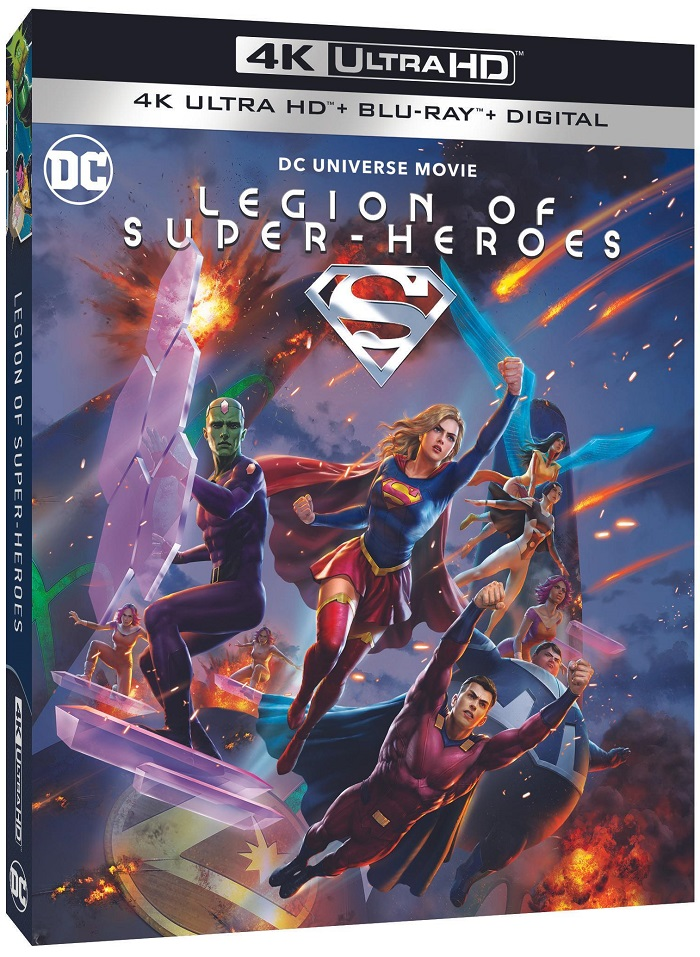

The recently hired Co-Chairmen and CEOs of the new DC Studios have the weight of the universe on their shoulders—the DC Universe, that is. But it’s okay, they have plenty of superhero friends they can call on for assistance, from Superman and Batman, to Swamp Thing and Booster Gold, to…well, pretty much everyone ever created for DC.
Short Info
Main Info
Since being placed in charge of DC’s upcoming slate of films and TV series, the two newly minted execs had to hit the ground running, kickstarting the development process for their first batch of projects—ten of which were announced this morning—while shepherding already existing DC films and TV shows forward. Unsurprisingly, finding ways for it all to coexist was not without its challenges, but by Gunn’s own admission, they were aided by some good fortune.
“I think that we’ve gotten lucky with the next four movies because we have Shazam, which leads into Flash, which resets everything, which then goes into Blue Beetle, which is totally disconnected (from everything that came before) and can be a part of the DCU, which goes into Aquaman, which leads into Superman: Legacy, our first big project,” he explains. “But the one thing that we can promise is that everything from our first project forward will be canon and will be connected. We’re using some actors from the past, we’re not using other actors from the past, but everything from that moment forward will be connected and consistent.”
Gunn: Even though this is all a connected universe, it’s really important to me that the individual writers and directors on the projects give their own self-expression to it, just like they do in the comics. Everything doesn’t always look the same. Everything doesn’t always have the same expression. Different artists bring remarkably different looks, feels and tones. This is not the Gunnverse.
I want each project to have the feelings of the individual artist that’s working on it and to give them a lot of freedom—as long as it works—to create something special because what I’ve found through Marvel, what wasn’t exciting was when movies were tonally the same. What was exciting was when you had something like Guardians come out and everyone was like, “How is this raccoon going to be dealing with this God of Thunder? That’s going to be weird.”
But then when you actually see the mash-up happen, that’s what makes it so fun. So, to see seemingly tonally incongruent things come together is part of the fun of all this.
Gunn: We have Tom King. He has been my partner throughout all of this. He was giving me answers to sh*t before I took the job. So it’s me; him; Christal Henry, who worked on Watchmen; Christina Hodson, who wrote The Flash; Drew Goddard, who you probably know; and Jeremy Slater, who just did Moon Knight. That’s the group of people we’ve been meeting with and putting all of this together.
I want each project to have the feelings of the individual artist that’s working on it and to give them a lot of freedom—as long as it works—to create something special because what I’ve found through Marvel, what wasn’t exciting was when movies were tonally the same. What was exciting was when you had something like Guardians come out and everyone was like, “How is this raccoon going to be dealing with this God of Thunder? That’s going to be weird.”
But then when you actually see the mash-up happen, that’s what makes it so fun. So, to see seemingly tonally incongruent things come together is part of the fun of all this.